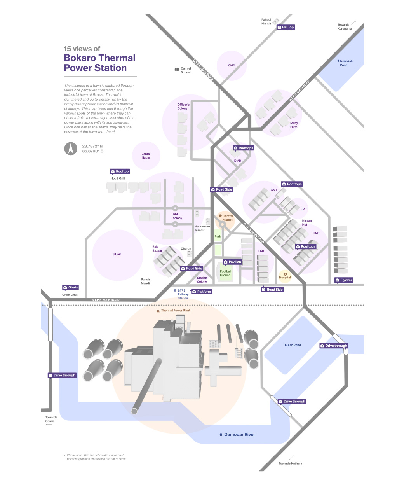

15 views of Bokaro Thermal.
Picturing the power plant- The power plant is the sole spot that defines the town you can see it from almost every where. What are these spots that you can picture (take a photo) the power plant from such that you have the essence of the town with you. the town is scenic beautiful and lush green in contrast to the power plant.



Creating the blind map
Tracing google maps
Finalizing major roads
Final road layout
Final map